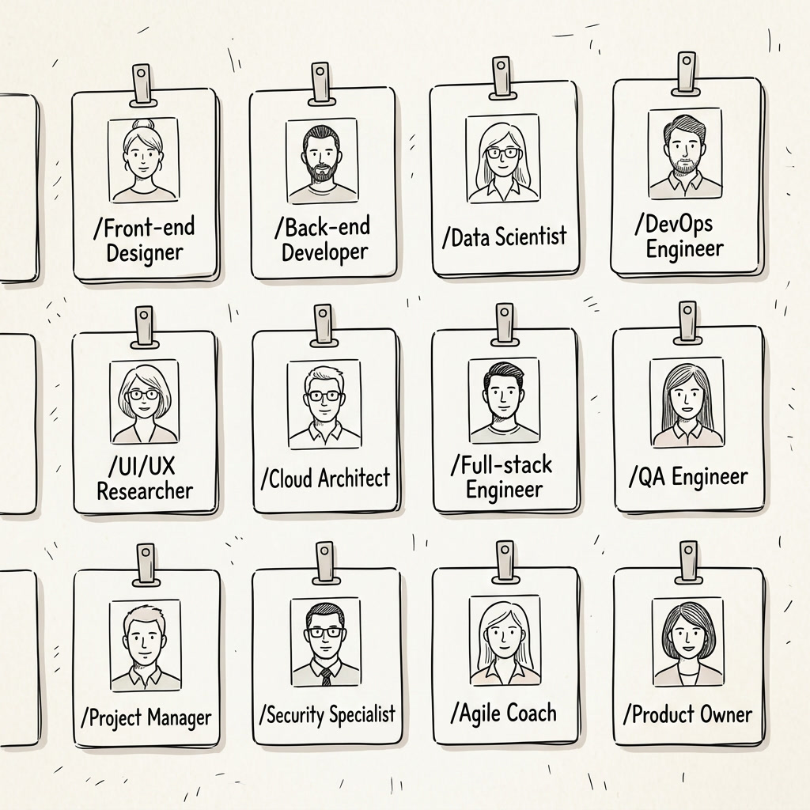
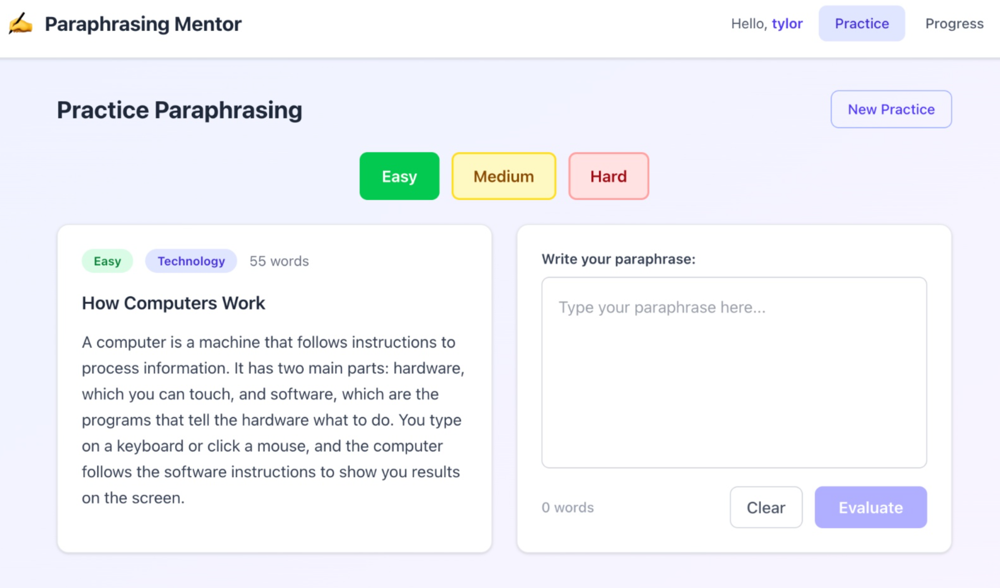
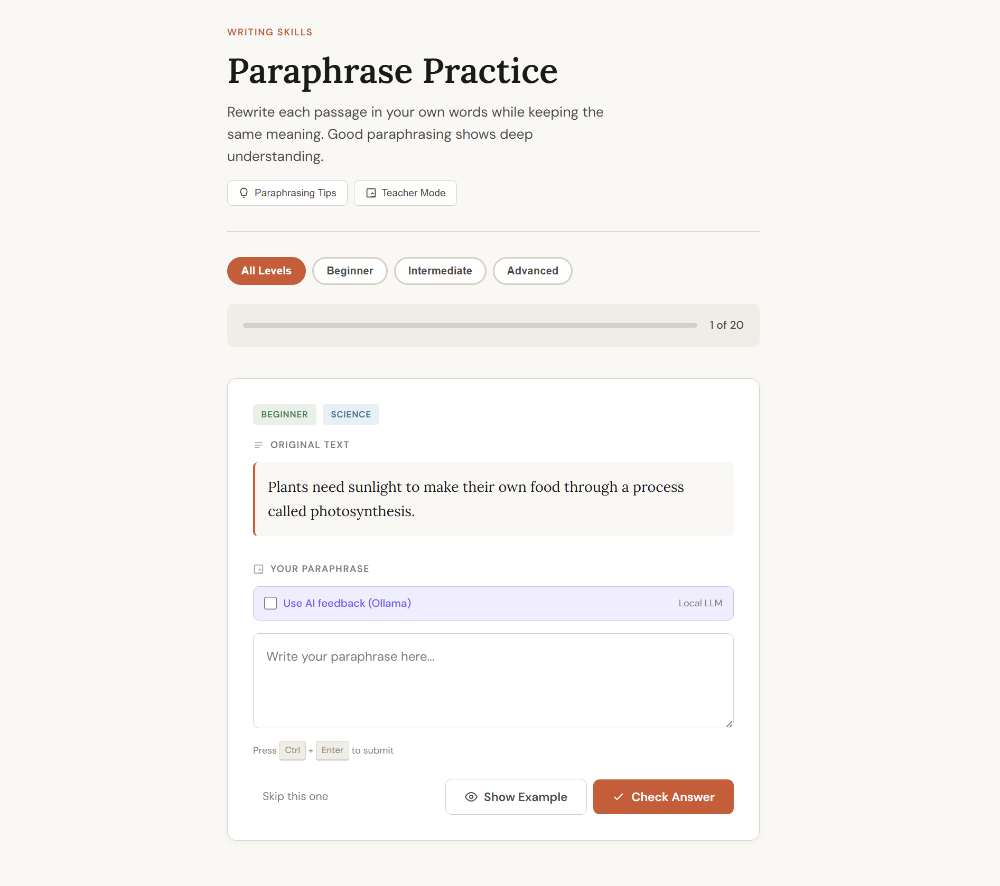

What Are Skills?
Think of your AI coding assistant as a smart helper that can do many things. Skills are like specialized experts you can call on when you need help with something specific.
Imagine you're building a house. You could try to do everything yourself, but it's much better to call an electrician for wiring, a plumber for pipes, and a painter for finishing touches. Skills work the same way - they're specialized experts that know exactly how to handle specific tasks like building user interfaces, writing tests, designing APIs, or securing your code.

Why Skills Matter for Your Hackathon
During the hackathon, you'll be building features quickly. Skills help you:
- Work faster - No need to research best practices; skills already know them
- Avoid mistakes - Skills catch common errors before they become problems
- Build better - Skills ensure your code follows professional standards
- Stay focused - Let skills handle the technical details while you focus on your idea
What Skills Look Like in Action
When you work with skills, here's the difference you'll see:
Without Skills

The result might look fine at first glance. But people soon realise that every UI generated by AI looks the same - generic, stale, and indistinguishable from thousands of other AI-built apps.
With Skills Activated

Skills bring specialized knowledge and proven best practices to every task, creating something unique, polished, and professional that stands out from generic AI output.
The image above illustrates how Skills represent specialized experts in your AI coding workflow.
Skills are activated using slash commands. Simply prefix your request with the skill name.
Method 1: Automatic (Agent Suggests)
Describe what you want to do in plain English, and the agent will figure out which skill to use.
Click to reveal the prompt
I need to build a login page with email and password. Use suitable skills for this task.
The agent will automatically:
- Recognize you're building a UI feature
- Activate /frontend-design for the interface
- Activate /security-review for password handling
- Apply the skills and produce high-quality code
Use automatic activation when you're not sure which skill you need, or when you want the agent to handle the technical decisions. This is great for beginners or when you're exploring ideas.
Method 2: Manual (You Specify)
Sometimes you know exactly which skill you want. Use the slash command to specify it directly.
Click to reveal the prompt
/frontend-design Create a beautiful dashboard
Click to reveal the prompt
/security-review Check my authentication code
Click to reveal the prompt
/tdd-workflow Add tests to my project
The agent will immediately activate that skill and follow its specialized workflow.
Use manual activation when you know exactly what you need, when automatic didn't suggest the right skill, or when you want to force a specific approach. This is great when you have experience with skills or when you need something very specific. Browse the 14 Available Skills page to see all pre-installed skills.
Skills are your secret weapon for the hackathon. They give you access to expert-level knowledge in every area of software development. Use them liberally, trust their workflows, and you'll build better features faster.